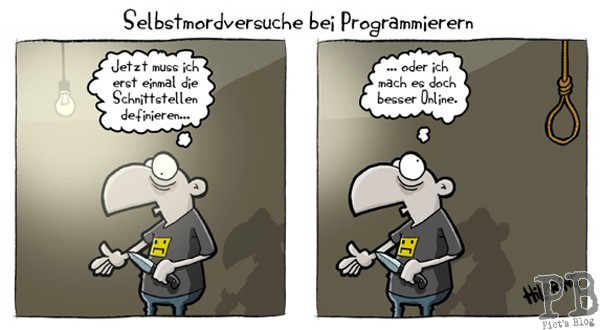

Suizidale Programmierer
Weit hinten, hinter den Wortbergen, fern der Länder Vokalien und Konsonantien leben die Blindtexte. Abgeschieden wohnen sie in Buchstabhausen an der Küste des Semantik, eines großen Sprachozeans. Ein kleines Bächlein namens Duden fließt durch ihren Ort und versorgt sie mit den nötigen Regelialien. Es ist ein paradiesmatisches Land... mehr lesen
Der kleine Blindtext
Weit hinten, hinter den Wortbergen, fern der Länder Vokalien und Konsonantien leben die Blindtexte. Abgeschieden wohnen sie in Buchstabhausen an der Küste des Semantik, eines großen Sprachozeans. Ein kleines Bächlein namens Duden fließt durch ihren Ort und versorgt sie mit den nötigen Regelialien. Es ist ein paradiesmatisches Land, in dem einem gebratene Satzteile in den Mund fliegen. Nicht einmal von der allmächtigen Interpunktion werden die Blindtexte beherrscht – ein geradezu unorthographisches Leben... mehr lesen
Der kleine Blindtext
Weit hinten, hinter den Wortbergen, fern der Länder Vokalien und Konsonantien leben die Blindtexte. Abgeschieden wohnen sie in Buchstabhausen an der Küste des Semantik, eines großen Sprachozeans. Ein kleines Bächlein namens Duden fließt durch ihren Ort und versorgt sie mit den nötigen Regelialien. Es ist ein paradiesmatisches Land, in dem einem gebratene Satzteile in den Mund fliegen. Nicht einmal von der allmächtigen Interpunktion werden die Blindtexte beherrscht – ein geradezu unorthographisches Leben... mehr lesen